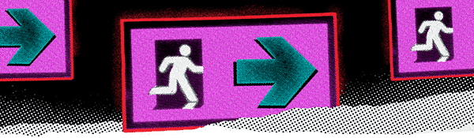

<div class="notifications">
  <app-nav></app-nav>

  <div class="all tab" *ngIf="UIS.activenavmenu==0">
<app-tweet *ngFor="let tweet of tweetsvc.notificationtweets" [tweetdata]="tweet"></app-tweet>

  </div>
  <div class="verified tab" *ngIf="UIS.activenavmenu==1">
    <div class="verifiedimage">
      
    </div>
    <div class="verfiedtext">Nothing to see here <br> — yet</div>
    <div class="verifiedexplanation">
      Likes, mentions, reposts and a whole lot more – when it comes from a verified account, you’ll find it here.
      <a >Learn more</a>
    </div>
  </div>
<div class="mentions tab" *ngIf="UIS.activenavmenu==2">

<div class=" verfiedtext mentiontextsize">Control which conversations you’re mentioned in</div>

<div class="mb-[32px] verifiedexplanation">
  Use the action menu — those three little dots on a Tweet — to untag yourself and leave a conversation.
  <a >Learn more</a>
</div>

<app-tweet *ngFor="let tweet of tweetsvc.notificationtweets" [tweetdata]="tweet"></app-tweet>

</div>


</div>
